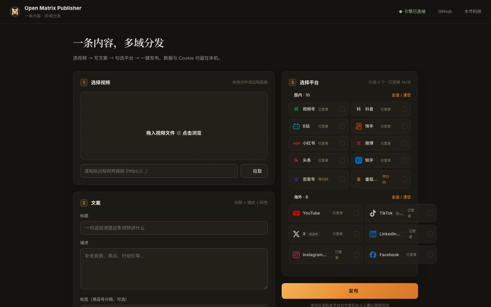

专为传统外贸 B2B 工厂、跨境电商卖家与出海创作者打造。
一次创作，一键并发分发到国内外主流平台（当前已接入 16 个：国内 10 + 海外 6）。数据与 Cookie 全部留在本机，免费开源。

告别繁琐的账号反复登录与重复复制粘贴，一次创作全网爆发
自主研发实拍、车间生产线与质检视频，一键直发 LinkedIn + YouTube + 微信视频号 + X，让国际大宗采购询盘直达您的后台。
亚马逊、TikTok Shop、TEMU 与 Shopify 产品测评视频，同步分发至 TikTok + Instagram + 抖音 + 小红书，轻松引爆全球流量。
中英双语 0 成本 AI 文案生成，真实浏览器静默发布，零云端泄露风险，一次点击实现多平台无感发布。
无需复杂的服务器配置，像使用常用桌面软件一样简单
下载适用于 Mac 的 `.dmg` 或 Windows 的 `.exe` 安装包。双击启动即可打开独立的本地可视化控制台。
点击平台卡片「扫码登录」自动完成安全 Cookie 保存；支持粘贴豆包 / Kimi 网页端链接，1 秒提取中英爆款标题与标签。
选择本地视频文件，勾选目标平台，点击「一键发布」，后台并发提交，发布进度实时掌握。
深耕国内顶级流量池，无缝衔接海外核心社交与视频高地（当前已接入 16 个平台）
私域与公域双向破圈
国民级短视频流量池
中长视频与极客主场
高黏性社区流量
生活方式与种草
全网热搜发酵阵地
字节信息流推荐
硬核专业问答
百度搜索高权重
字节中长视频生态
全球最大视频平台
国际短视频第一入口
时尚与视觉品牌阵地
全球熟人社交大网
实时科技与出海圈层
B2B 外贸商业阵地
对比传统商业 SaaS 与浏览器插件，看清真正出海利器的差异
| 对比维度 | 传统商业 SaaS (Buffer/Hootsuite) | Chrome 浏览器插件 | 🚀 Open Matrix Publisher |
|---|---|---|---|
| 软件费用 | $99 ~ $300+ / 月订阅费 | 基础免费 / 增值功能收费 | 100% 永久开源免费 (MIT 协议) |
| 国内平台支持 | ❌ 零支持 (不支持微信/抖音/B站) | 仅支持文章类平台 | ✅ 完整覆盖 10 大国内主流平台 |
| 数据隐私与安全 | ❌ 账号 Cookie 需托管至商业云端 | ⚠️ 受浏览器 SandBox 限制 | 🔒 100% 本地运行，Cookie 零云端泄漏 |
| 4K 大视频分发 | 网络传输慢，经常挂断 | ❌ 插件后台容易中断超时 | ⚡ 本地直传，断点极速提交 |
| AI 智能体编排 | ❌ 无原生 MCP 接口 | ❌ 无 Agent 编排机制 | 🤖 原生支持 MCP，AI 智能体可接管分发 |
不能。本网页为官方产品介绍与使用指南。实际的分发需要运行在本地电脑上的客户端（macOS / Windows），或通过源码运行 ./start_ui.sh 打开本地控制台使用。
绝对安全。Open Matrix Publisher 100% 运行在您的本地电脑上。所有 Cookie 均加密存储在您本机的数据目录中，绝不会向任何第三方云端传输。
完全不需要！我们内置了免费网页端 AI 连通器（豆包 / Kimi），您可以直接零成本提取爆款标题与描述，无需购买昂贵的 API Key。
支持！项目内置了标准的 Python MCP Server (mcp_server.py)，智能体可以通过平台列表与发布工具自动接管全网分发。